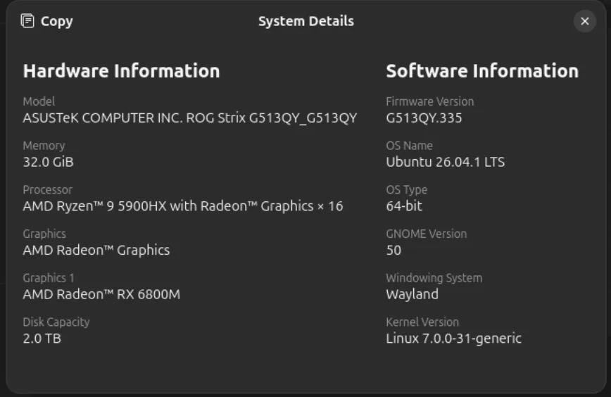
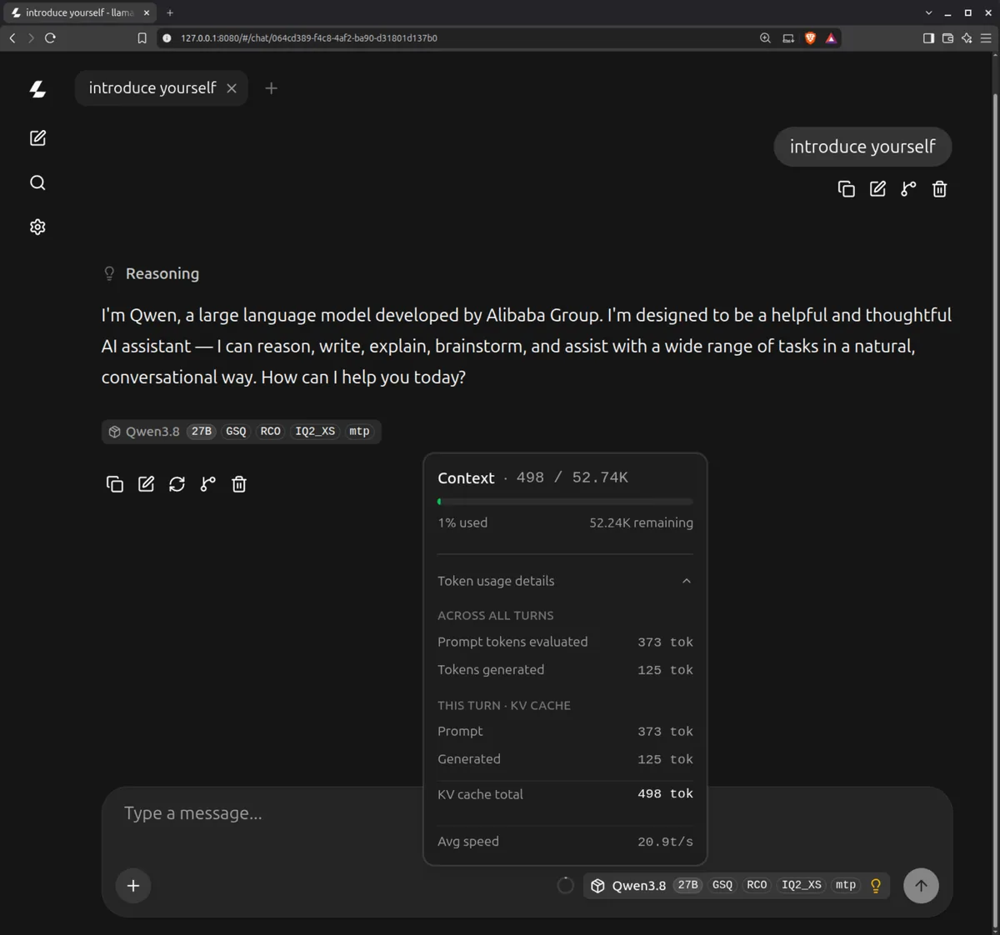
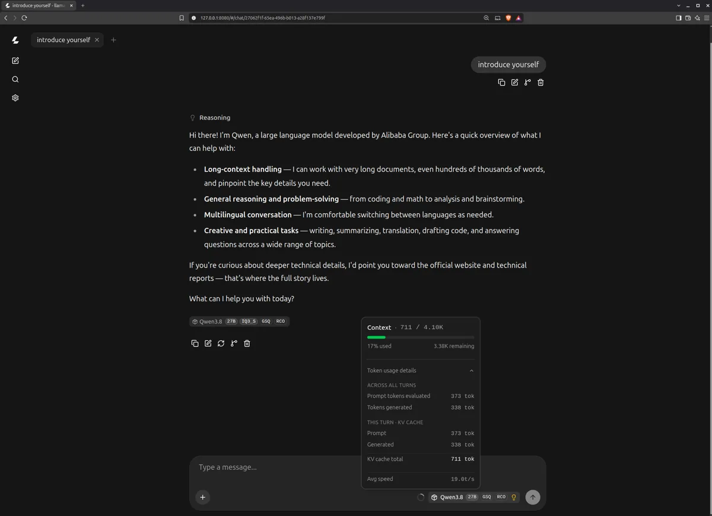
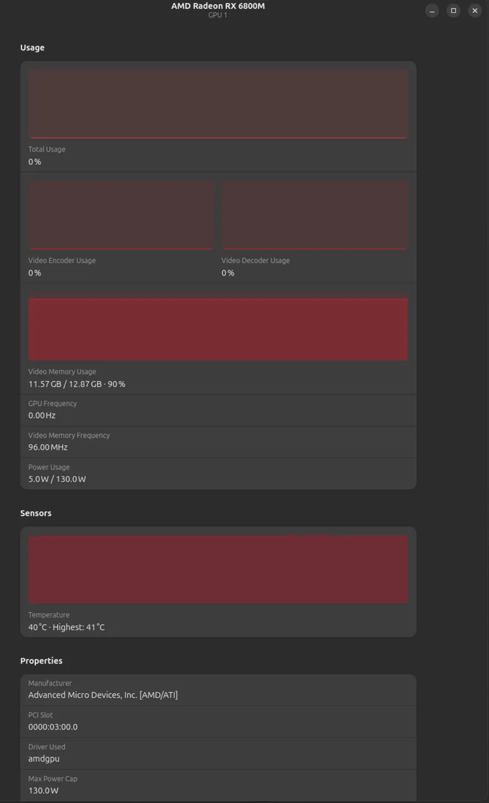
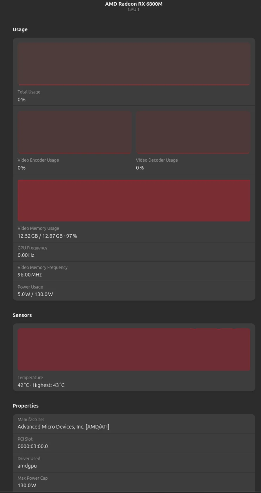

🧪 VelsTech Lab Can a 27B dense model be usable on a 12 GB mobile GPU? I ran two quants of Qwen3.8 27B GSQ-RCO – IQ2_XS (with an MTP draft head) and IQ3_S – side by side on the RX 6800M. The quant you pick decides both your context budget and your speed, and one llama.cpp flag mistake quietly cost the IQ3_S run 92% of its context.
LLM VRAM Calculator – does 27B IQ2/IQ3 + your context fit your VRAM? · GPU AI Performance Calculator – what tok/s to expect before you run.
Open calculators →The test rig
- Machine: ASUS ROG Strix G513QY · Ryzen 9 5900HX (8C/16T) · AMD RX 6800M 12GB (RDNA2, mobile) · 32 GB RAM · 2 TB NVMe
- OS: Ubuntu 26.04.1 LTS (Wayland) · ROCm · llama.cpp (current build),
n_threads=8 - Model A:
Qwen3.8-27B-GSQ-RCO-IQ2_XS-mtp.gguf– 27B dense, i-quants at ~2 bpw, ships a block-64 MTP draft head - Model B:
Qwen3.8-27B-GSQ-RCO-IQ3_S.gguf– same model, ~3 bpw, no draft head - Both runs:
-ngl 999 --cache-type-k q8_0 --cache-type-v q8_0 -fa on --fit on --reasoning-preserve --jinja

How we ran it
Run 1 – IQ2_XS (with MTP tensors)
export LD_LIBRARY_PATH=/opt/rocm/lib:$LD_LIBRARY_PATH llama-server \ -m /home/user-name/models/Qwen3.8-27B-GSQ-RCO-IQ2_XS-mtp.gguf \ -ngl 999 \ --cache-type-k q8_0 \ --cache-type-v q8_0 \ -fa on \ --fit on \ --reasoning-preserve \ --jinja
Run 2 – IQ3_S
export LD_LIBRARY_PATH=/opt/rocm/lib:$LD_LIBRARY_PATH llama-server \ -m /home/user-name/models/Qwen3.8-27B-GSQ-RCO-IQ3_S.gguf \ -ngl 999 \ --cache-type-k q8_0 \ --cache-type-v q8_0 \ -fa on \ --fit on \ --reasoning-preserve \ --jinja
What we measured
Metric IQ2_XS-mtp IQ3_S Delta
──────────────────────────────────────────────────────────────
Decode (eval) 20.77 tok/s 18.97 tok/s +9.5%
Decode (tg) 20.70 tok/s 18.93 tok/s +9.4%
Prompt eval 113.51 tok/s 178.32 tok/s -36% (IQ3_S faster)
Context fitted 52,736 tok 4,096 tok 12.9×
VRAM used 11.57 / 12.87 GB 12.52 / 12.87 GB
(90%) (97%)
Graphs reused 124 252
Chat UI avg speed 20.9 t/s 19.0 t/s
Takeaway: IQ2_XS wins decode while carrying 13× more context – and a bigger KV cache makes decode slower, not faster, so the win is real. IQ3_S reads more bytes per token (~3 bpw vs ~2 bpw) and the GPU is bandwidth-bound on this card; that gap shows up as ~1.8 tok/s lost. The surprise is prompt eval: IQ3_S processes input 57% faster (178 vs 114 tok/s) – i-quants at 2 bpw pay a heavier dequant/codebook cost per token during the compute-bound prompt pass, while decode is bandwidth-bound and flips the ranking.
The proof – chat runs


VRAM – the quiet story


What the logs said – and what broke
- Run 2:
W common_fit_params: failed to fit params to free device memory: n_gpu_layers already set by user to 999, abort–--fitwants to choose-ngland context together; forcing-ngl 999by hand makes it bail, so IQ3_S fell back to the default 4096-token context. Drop-ngl(or set-cexplicitly) and--fitwill size it properly – expect somewhere between 4K and 16K once ~9.5 GB of weights are resident. - Run 1: fifteen
W model has unused tensor blk.64.*lines – the whole extra transformer block (attention + FFN +nextn.*MTP head, ~348 MB) is ignored because no--spec-type draft-mtpflag was passed. The MTP head is dead weight in this run; enabling it is the obvious next test (it gave +14.6% on Tiel-Coder 35B-A3B). - Both runs:
W srv llama_server: CORS is set to allow all origins ('*') and no API key is set– harmless while the server binds127.0.0.1only; never expose this port to a network without an API key. - Both runs:
n_ctx_slot = 52736 / 4096, kv_unified = 'true'– unified KV across 4 slots; the 52K figure is what--fitproved could fit alongside the IQ2_XS weights.
Bottom line
On a 12 GB RX 6800M, IQ2_XS is the practical choice for this 27B: ~21 tok/s decode, a genuinely usable 52K context, and 10% VRAM headroom. IQ3_S is the better-looking quant that this card can't afford yet – 97% VRAM before any real context, and my -ngl 999 mistake hid its true capacity. Re-running IQ3_S with --fit in charge (no manual -ngl) and IQ2_XS with --spec-type draft-mtp are the two follow-ups worth doing – if IQ3_S fits even 16K, it may be the quality pick; if MTP works here, IQ2_XS could cross 23–24 tok/s.
Related: How much VRAM does an LLM need? · Quantization deep dive · MoE vs Dense on the same card.
Back to VelsTech Lab →